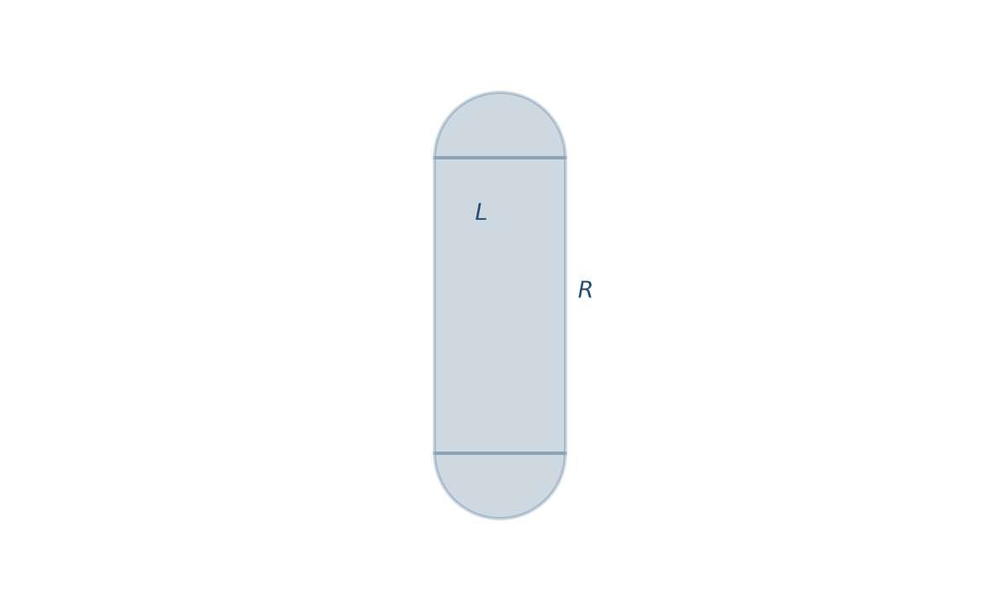
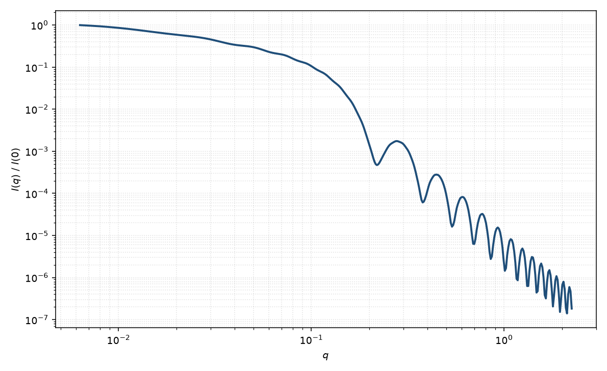

端帽圆柱
capped cylinder
适用场景
端帽圆柱（胶囊、spherocylinder）是半径 $R$ 的有限圆柱两端各加一个半球。适用于蠕虫状胶束的刚性短段、两端圆化的纳米棒、以及平端圆柱在电镜上明显“收圆”的样品。
相对平端圆柱，高 $q$ 的端面 $q^{-4}$ 特征减弱，因为半球帽去掉了锐利的圆盘端面。总长度 $L+2R$ 进入 $R_g$，不要把 $L$ 理解成尖端到尖端的全长（本页 $L$ 仅指圆柱中段）。
物理图像
Kaya 与 de Souza 指出，圆柱加球形端帽的振幅式在 $R_{\mathrm{bell}}=R$ 时就是半球帽圆柱。取向平均仍对 $\alpha$ 积分。半球体积各为 $2\pi R^3/3$，中段体积 $\pi R^2 L$。
若端帽半径小于圆柱半径，几何变为“小帽/透镜”极限，已超出本页的半球帽约定，应回到 Kaya 的一般端帽式并检查是否物理。
示意图


核心公式
半球帽是哑铃式在 $R_{\mathrm{bell}}=R$、$h=0$ 的特例。总振幅
$$A(q,\alpha)=A_{\mathrm{cyl}}(q,R,L,\alpha)+A_{\mathrm{hemi}}(q,R,\alpha),$$ $$R_g^2=\frac{(L+2R)^2}{12}+\frac{R^2}{5}\cdot\frac{3L+8R}{3L+4R}.$$第二式为均匀胶囊的回转半径（常用于核对 Guinier）。粉末平均同圆柱。
参数表
| 参数 | 符号 | 含义 | 单位 | 典型范围 |
|---|---|---|---|---|
| 半径 | $R$ | 圆柱与半球的共同半径 | Å 或 nm | 5–300 Å |
| 中段长度 | $L$ | 不含半球的圆柱长度 | Å 或 nm | 10–2000 Å |
| 取向角 | $\theta,\phi$ | 轴相对光束（二维） | 度 | 由取向分布约束 |
| 衬度 | $\Delta\rho$ | 相对溶剂的 SLD 差 | Å$^{-2}$ | 均匀物体 |
| 标度 / 本底 | $\mathrm{scale}$, $B$ | 前置因子与本底 | 与强度单位一致 | 实验相关 |
拟合注意
与平端圆柱的差别主要在高 $q$ 与 $R_g$ 标定。数据截断在中间区时，端帽与平端几乎不可分辨，应固定几何或改用更简单的圆柱。
多分散：半径分布同时放大帽与中段；长度分布只改中段。取向 $\theta,\phi$ 同圆柱。磁性均匀磁化时磁形式因子与核通道同几何，磁死层出现在端面或侧面时须分开磁半径。
相近模型
参考文献
- Kaya, H. Scattering from cylinders with globular end-caps. J. Appl. Cryst. 2004, 37, 223–230. DOI: 10.1107/S0021889804000020
- Kaya, H.; de Souza, N.-R. Scattering from capped cylinders. Addendum. J. Appl. Cryst. 2004, 37, 508–509. DOI: 10.1107/S0021889804005709